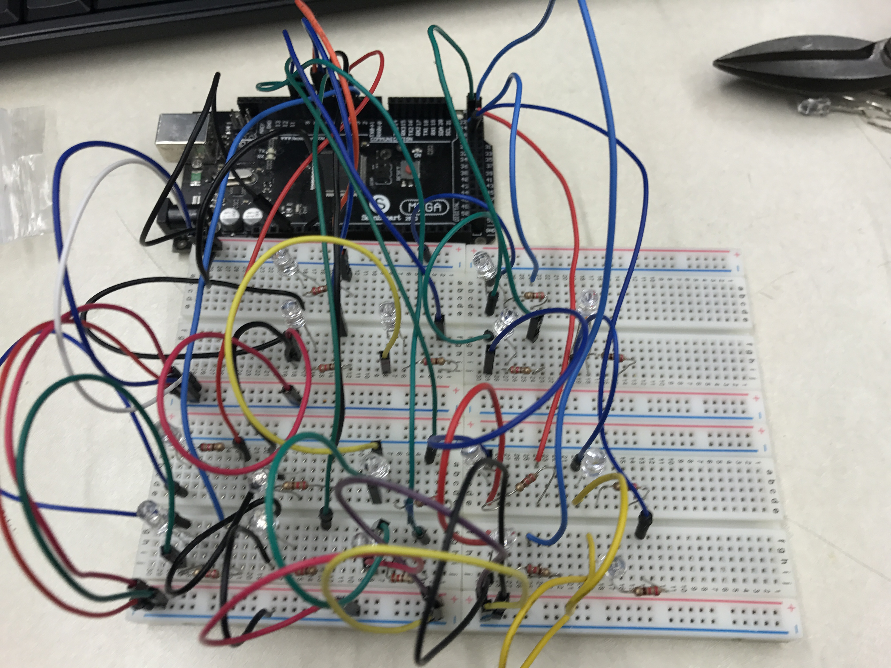

Binary Clock
A Binary clock is a clock that displays the correct time in binary format. Binary format is a number system that works on base 2 instead of our common decimal system, which works on base 10. The video below explains it well, and the image next to it explains how a binary clock works.

I built this binary clock at school as a Computer Science Principles project. I wanted to incorporate a number system other than our own, along with making a clock with arduino. Therefore, this idea seemed really beneficial.
